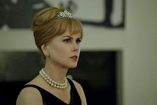

Nicole Mary Kidman
Więcej, niż tylko żona swojego męża

Rozpoczęła karierę w teatrze ulicznym i z czasem trafiła do telewizji, gdzie została dostrzeżona w filmie "Bush Christmas". Po 1989 została dostrzeżona również na arenie międzynarodowej. Wtedy zagrała główną rolę w Thrillerze "Martwa cisza", a rok później zadebiutowała w Holliwood w filmie "Szybki jak błyskawica", w którym zagrała ze swoim przyszłym mężem Tomem Cruise'em.
Nicole pozostawała w cieniu swojego męża aż do 1995 roku. Gdy zagrała filmach "Batman Forever" i "Za wszelką cenę", a za ten ostatni otrzymała Złoty Glob w Cannes, jej kariera nabrała rozpędu. Rok później Nicole zagrała w filmowej wersji powieści Henry Jamesa "Portret damy" wyreżeserowanej przez Jane Champion. Był to ostateczny przełom w karierze gwiazdy, kiedy to ona udowodniła, że jest nie tylko "żoną swojego męża".
Filmy fabularne
1983 'Bez uczucia (Skin Deep)' jako Sheena Henderson
1983 'Chase Through the Night' jako Petra
1983 'Bush Christmas' jako Helen
1983 'Bandyci kontra BMX (BMX Bandits)' jako Judy
1984 'Matthew i syn (Matthew and Son)' jako Bridget Elliot
1985 'Wills & Burke' jako Julia Matthews
1985 'Archer’s Adventure' jako Catherine
1986 'Windrider' jako Jade
1987 'Un’ Australiana a Roma' jako Jill
1987 'Królowie nocy (Watch the Shadows Dance)' jako Amy Gabriel
1987 'Kawałek (The Bit Part)' jako Mary McAllister
1987 'Room to Move' jako Carol Trig
1988 'Emerald City' jako Helen, dziewczyna Mike’a McCorda
1989 'Martwa cisza (Dead Calm)' jako Rae Ingram
1990 'Szybki jak błyskawica (Days of Thunder)' jako dr Claire Lewicki
1991 'Randka na przerwie (Flirting)' jako Nicola Radcliffe
1991 'Billy Bathgate' jako Drew Preston
1992 'Za horyzontem (Far and Away)' jako Shannon Christie
1993 'Pełnia zła (Malice)' jako Tracy Kennsinger
1993 'Gra o życie (My Life)' jako Gail Jones
1995 'Batman Forever' jako dr Chase Meridian
1995 'Za wszelką cenę (To Die For)' jako Suzanne Stone Maretto
1996 'Gwiazdor (The Leading Man)' jako Prezenterka zdobywców nagród
1996 'Portret damy (The Portrait of a Lady)' jako Isabel Archer
1997 'Peacemaker (The Peacemaker)' jako Julia Kelly
1998 'Totalna magia (Practical Magic)' jako Gillian Owens
1999 'Oczy szeroko zamknięte (Eyes Wide Shut)' jako Alice Harford
2001 'Dziewczyna na urodziny (Birthday Girl)' jako Nadia
2001 'Inni (The Others)' jako Grace Stewart
2001 'Moulin Rouge!' jako Satine
2002 'Godziny (The Hours)' jako Virginia Woolf
2002 'Azyl (Panic Room)' jako Głos dziewczyny Stephena w telefonie
2003 'Dogville' jako Grace
2003 'Piętno (The Human Stain)' jako Faunia Farley
2003 'Wzgórze nadziei (Cold Mountain)' jako Ada Monroe
2004 'Narodziny (Birth)' jako Anna
2004 'Żony ze Stepford (The Stepford Wives)' jako Joanna Eberhart
2005 'Czarownica (Bewitched)' jako Isabel Bigelow / Samantha
2005 'Tłumaczka (Interpreter)' jako Silvia Broome
2006 'Happy Feet: Tupot małych stóp (Happy Feet)' jako Norma Jean
2006 'Futro. Portret wyobrażony Diane Arbus (An Fur: Imaginary Portrait of Diane Arbus)' jako Diane Arbus
2006 'Witaj w domu (Bienvenido a casa)' jako Hilary Pawell
2007 'Margot jedzie na ślub (Margot at the Wedding)' jako Margot
2007 'Złoty kompas (The Golden Compass)' jako Marisa Coulter
2007 'Inwazja (The Invasion)' jako Carol Bennell
2008 'Australia' jako lady Sarah Ashley
2009 'Dziewięć (Nine)' jako Claudia Jenssen
2010 'Między światami (Rabbit Hole)' jako Becca Corbett
2011 'Żona na niby (Just Go with It)' jako Devlin Adams
2011 'Anatomia strachu (Trespass)' jako Sarah
2012 'Hemingway i Gellhorn (Hemingway & Gellhorn)' jako Martha Gellhorn
2012 'Pokusa (The Paperboy)' jako Charlotte Bless
2013 'Stoker' jako Evelyn „Evie” Stoker
2013 'Droga do zapomnienia (The Railway Man)' jako Patricia Wallace
2014 'Zanim zasnę (Before I Go to Sleep)' jako Christine Lucas
2014 'Grace, księżna Monako (Grace of Monaco)' jako Grace Kelly
2014 'Paddington' jako Millicent Clyde
2015 'Królowa pustyni (Queen of the Desert)' jako Gertrude Bell
2015 'Strangerland' jako Catherine Parker
2015 'Rodzina Fangów (The Family Fang)' jako Annie Fang
2015 'Sekret w ich oczach (Secret in Their Eyes)' jako Claire Sloane
2016 'Geniusz (Genius)' jako Aline Bernstein
2016 'Lion. Droga do domu (Lion)' jako Sue Brierley
2017 'Na pokuszenie (The Beguiled)' jako Martha Farnsworth
2017 'The Killing of a Sacred Deer' jako Anna Murphy
2017 'How to Talk to Girls at Parties' jako królowa Boadicea
2018 'Wymazać siebie' jako Nancy Conley, matka Garrarda
2018 'Aquaman' jako Atlanna
Seriale telewizyjne

1984 'A Country Practice' jako Simone Jenkins
1985 'Winners' jako Carol Trig
1985 'Five Mile Creek' jako Annie
1987 'Wietnam (Vietnam)' jako Megan Goddard
1989 'Bangkok Hilton' jako Katrina Stanton
2017 'Top of the Lake' jako Julia
2017 'Wielkie kłamstewka (Big Little Lies)' jako Celeste Wright